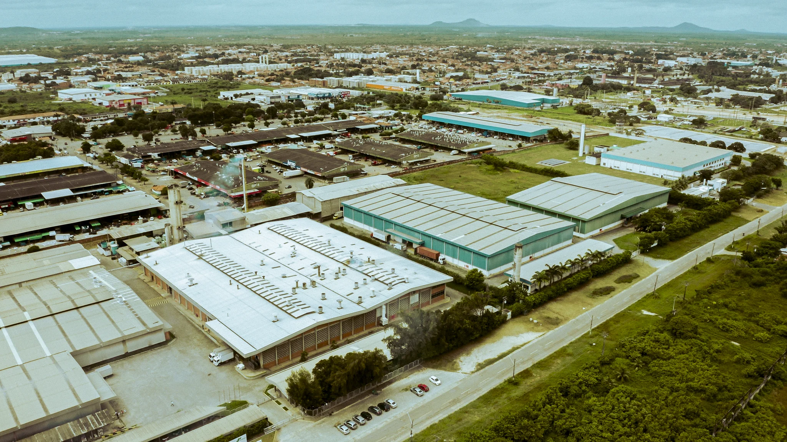
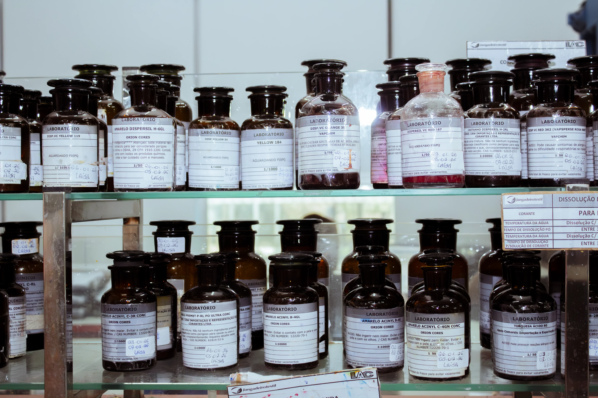
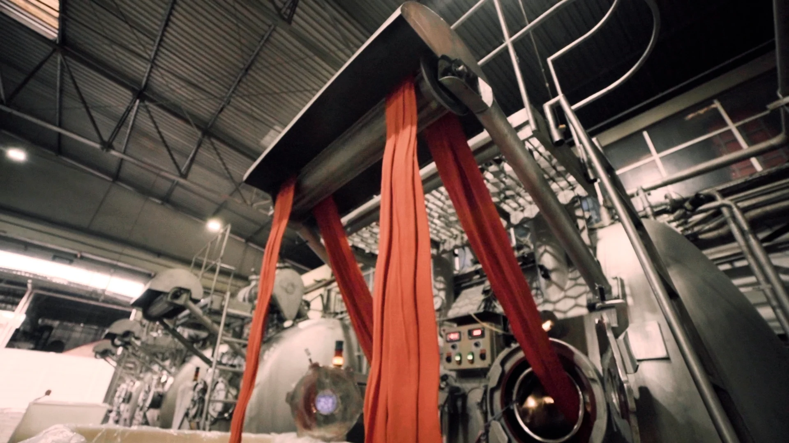
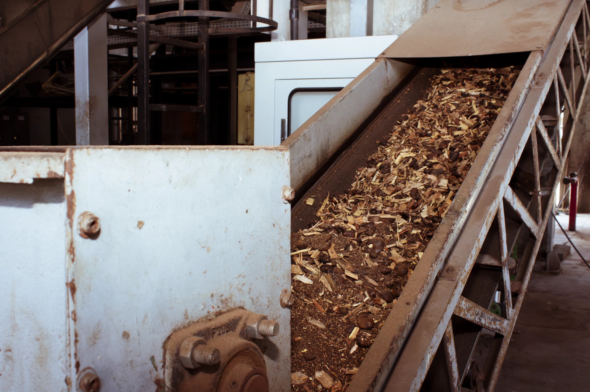
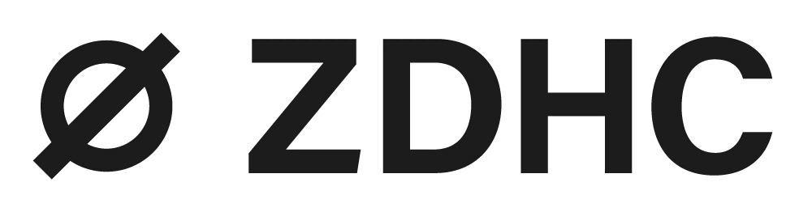
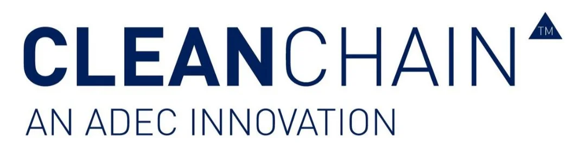
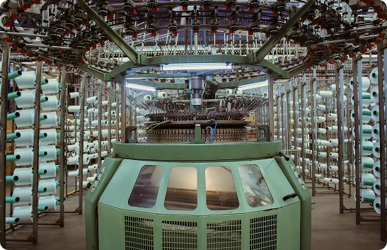
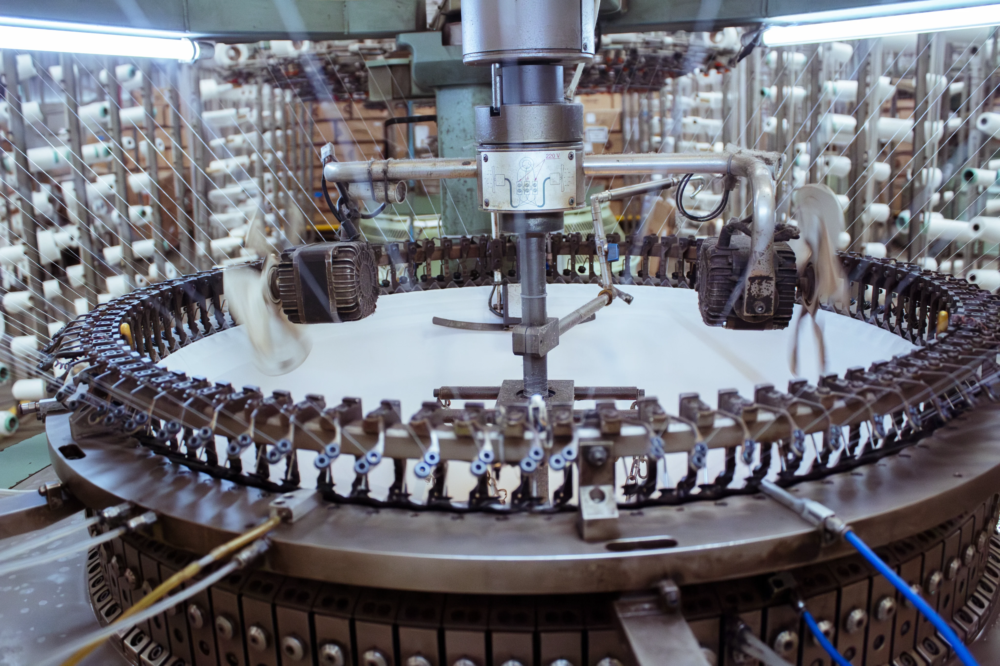
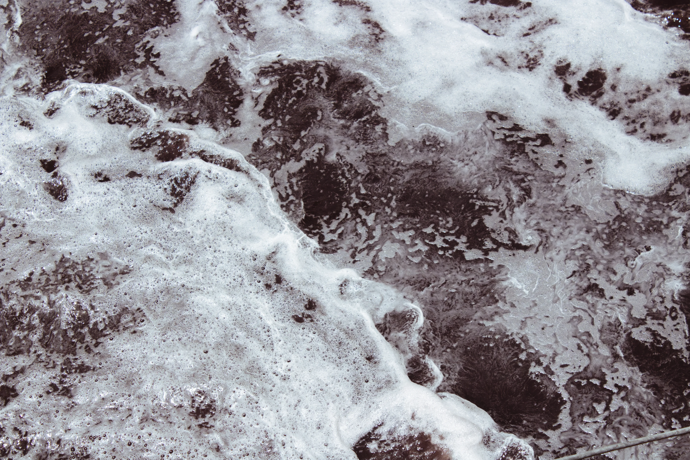
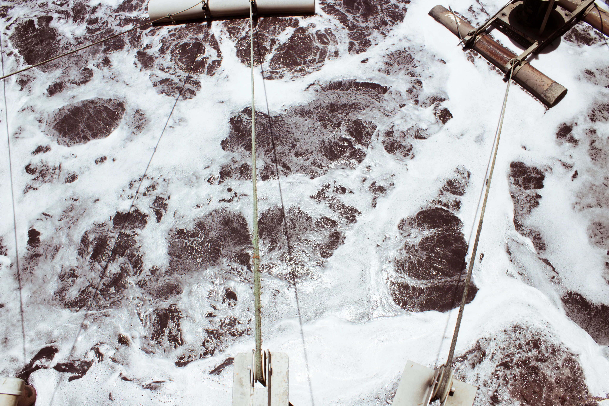

Produtos E Vidas Sustentáveis
Na Jangadeiro Têxtil, sustentabilidade não é apenas um conceito — é um compromisso integrado à nossa estratégia e à forma como conduzimos nossos processos diariamente.
Na Jangadeiro Têxtil, sustentabilidade não é apenas um conceito — é um compromisso integrado à nossa estratégia e à forma como conduzimos nossos processos diariamente.

Buscamos o equilíbrio entre desenvolvimento econômico, responsabilidade ambiental e impacto social positivo, garantindo que nossas operações contribuam para um futuro mais sustentável.
Realizamos a gestão dos produtos químicos com controle rigoroso, garantindo segurança no armazenamento, manuseio e aplicação.
Adotamos práticas para reduzir o uso de substâncias perigosas e promovemos a conscientização das equipes, assegurando uma operação mais segura e responsável.


Seguimos os princípios do programa ZDHC, adotando práticas que restringem o uso de substâncias químicas nocivas e garantem maior segurança em nossos processos.
Esse compromisso reforça uma produção mais responsável, alinhada aos padrões globais da indústria têxtil.
Gerenciamos nossos insumos químicos por meio da plataforma CleanChain, garantindo rastreabilidade, controle e conformidade ao longo de todo o processo.
Essa gestão permite mais transparência, segurança e consistência na escolha dos produtos utilizados.



Adotamos práticas estruturadas de gestão ambiental por meio do sistema HIGG FEM, que nos permite monitorar, avaliar e evoluir continuamente nossos processos.
Com uma abordagem orientada por dados, acompanhamos indicadores de desempenho ambiental, promovendo melhorias consistentes e alinhadas às melhores práticas do setor têxtil. Esse compromisso fortalece nossa responsabilidade com o meio ambiente e assegura transparência em toda a nossa operação.

Unimos tecnologia, design e responsabilidade para desenvolver produtos com menor impacto ambiental e alta qualidade.
Trabalhamos com estamparia digital em diversas bases, garantindo eficiência no processo, segurança nos insumos e consistência no resultado final.
Nossas estampas aliam criatividade e precisão, com cores vivas, definição e durabilidade, além de possibilidades exclusivas desenvolvidas por nosso time.
Materiais alinhados a práticas responsáveis.
Controle e segurança nos insumos.
Rigor e consistência em cada etapa.
Acompanhamos continuamente indicadores que nos ajudam a garantir a qualidade da água e reduzir impactos ambientais.
Esse controle faz parte do nosso compromisso com uma operação mais eficiente, responsável e alinhada às boas práticas ambientais.


Utilizamos Equipamentos de Controle da Poluição (ECP) para monitorar e reduzir as emissões atmosféricas do processo produtivo. Esses sistemas realizam a separação de partículas sólidas dos gases de combustão, contribuindo para a diminuição de poluentes e para a preservação do meio ambiente, em conformidade com as normas vigentes.
Reutilizamos cerca de 60% da água tratada em nossos processos, reduzindo o descarte e promovendo o uso mais consciente dos recursos.
Esse processo é viabilizado por sistemas de tratamento e controle que garantem segurança e eficiência.
